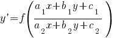

Уравнения с разделяющимися переменными:
Уравнения, приводящиеся к уравнениям с разделяющимися переменными:
Однородные уравнения:
Уравнения, приводящиеся к однородным: 
Линейные дифференциальные уравнения:
Уравнения Бернулли:
Уравнения в полных дифференциалах:
Уравнения, допускающие разложение на множители:
Уравнения, не содержащие x и y:
Уравнения, не содержащие x или y: или
Уравнения Клеро:
Уравнения Лагранжа:
Уравнения, решающиеся непосредственным интегрированием:
Уравнения, не содержащие y:
Уравнения, не содержащие x:
Уравнения, однородные относительно y, y′, y′′, ...:
Линейные однородные уравнения с постоянными коэффициентами: 
Линейные неоднородные уравнения с постоянными коэффициентами:
Линейные неоднородные уравнения со специальной неоднородной частью:


 , то – к уравнению с разделяющимися переменными.
, то – к уравнению с разделяющимися переменными.